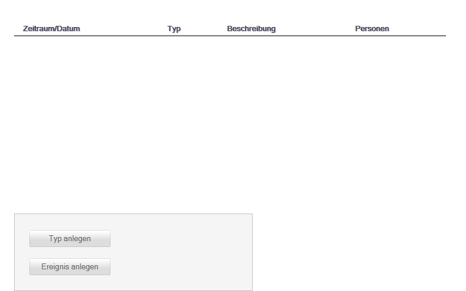

Projekthistorie
Die Projekthistorie ist eine Sammlung von Incidents (Zwischenfällen) an denen Personen beteiligt sein können. Diese Incidents können während des Projektverlaufes auftreten. Beispiele für solche Incidents sind, "Task erledigt", "Sprint beendet" oder "Urlaub" bzw. "Krankmeldung".

Sie haben weiterhin die folgenden Möglichkeiten:
Die Projekthistorie ist derzeit noch nicht vollständig implementiert. Die Hilfe wird entsprechend nachgetragen.
Created with the Personal Edition of HelpNDoc: Easy to use tool to create HTML Help files and Help web sites